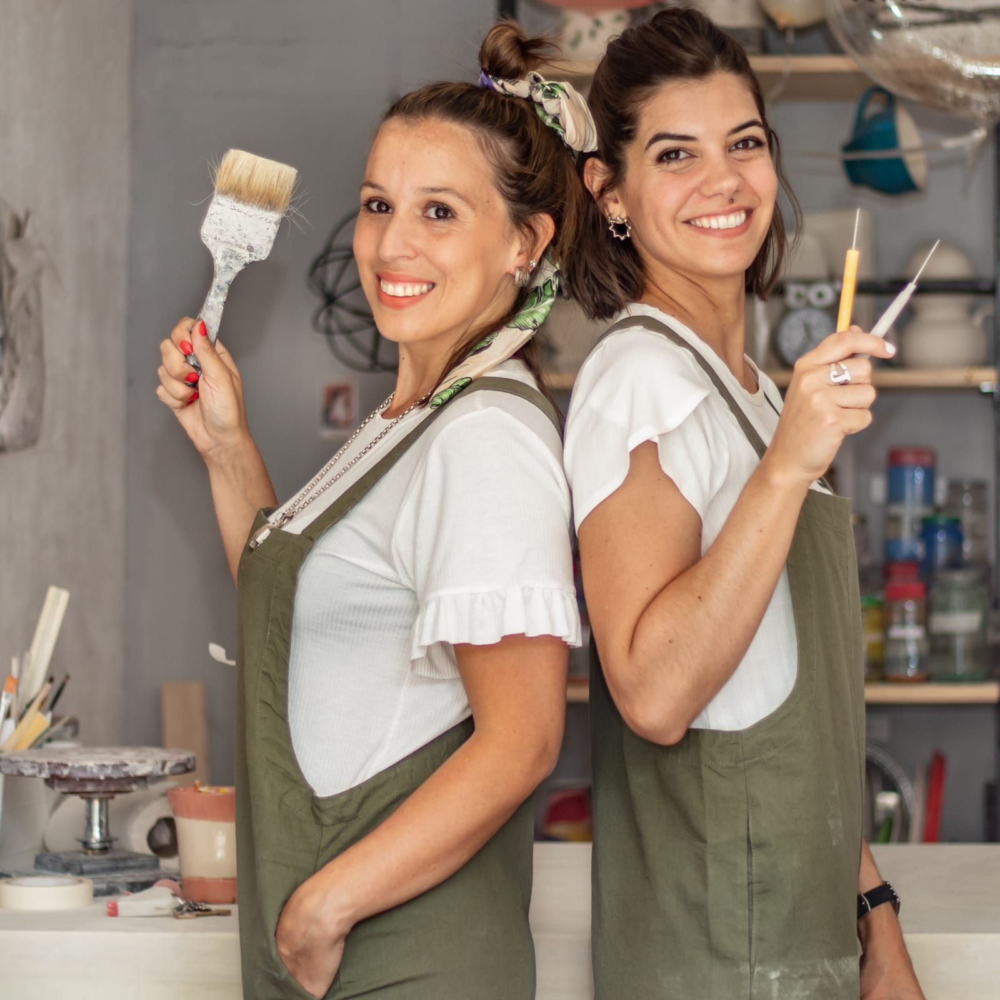
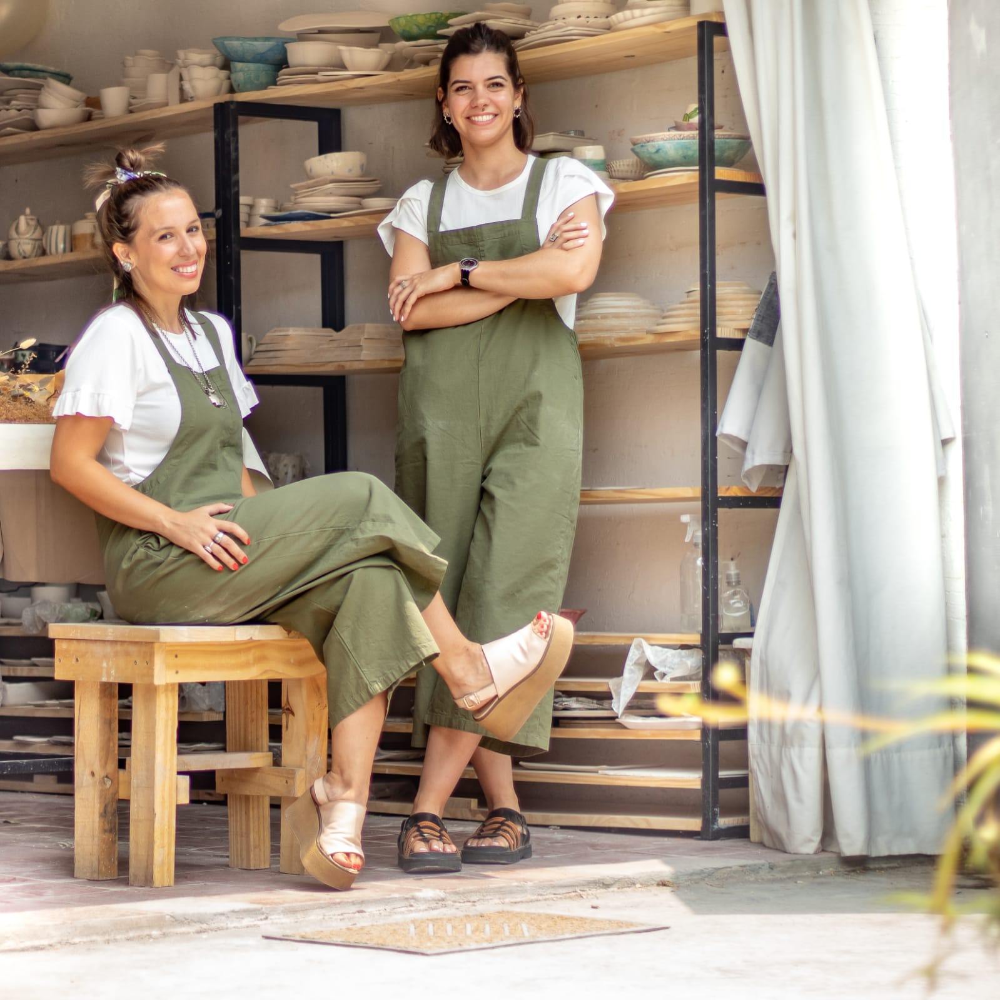
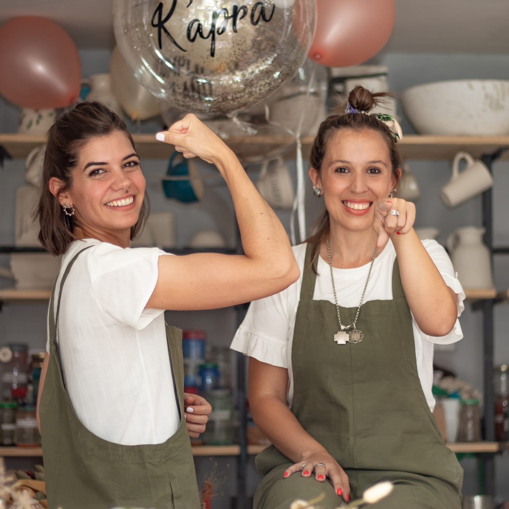
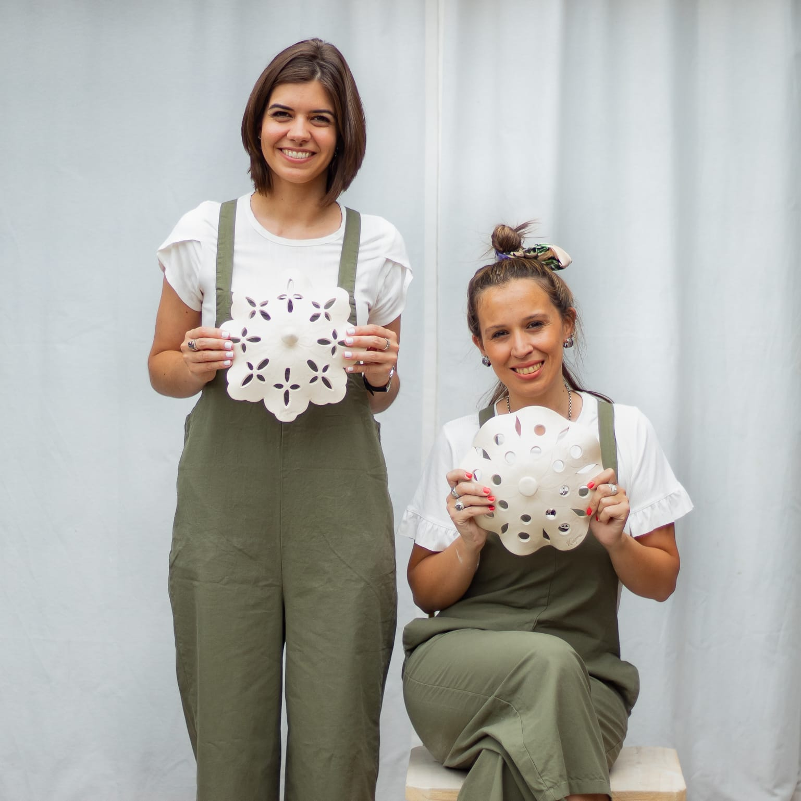

Hola somos K'apra !!!
Creemos en la cerámica como un medio para volver a una dimensión más humana, ya que los objetos artesanales no son solo cosas que contienen historia y conocimientos en su interior, sino, algo que se fusiona muy bien con el actual regreso a lo vernáculo que vivimos en decoración.
El plástico está acabando con nuestro ecosistema para contrarrestar el daño apostamos por volver a la esencia y usar cerámica un material que puede cambiar el mundo.
La arcilla está compuesta principalmente por silicatos de aluminio hidratados con pequeñas cantidades de otros óxidos. Antes que el material endurezca por el fuego, las arcillas se pueden trabajar, y constituyen el cuerpo principal del material. Las arcillas contienen muchas fases, pero la más importante es la arcilla mineral, como la caolinita, que le confiere la plasticidad.
Todos podemos ser parte de este cambio, unite te estamos esperando...




Somos Coky y Juli dos amigas, nos conocimos en la Facultad de Arquitectura y decidimos recorrer este camino juntas. Hoy somos Arquitectas y una vez cumplido el objetivo surgió la idea de poner un taller de ceramica, "K'apra", un lugar que nos permitía seguir utilizando la imaginación, y así, surge el deseo de poder transmitirlo a otras personas. Día a día aprendemos junto a nuestras alumnas este hermoso arte de la cerámica y nunca dejamos de sorprendernos, nos parece súper importante el intercambio de ideas que surge en el taller, todas aportando su idea.
Te invitamos a vivir la experiencia del taller, te contamos que son trabajos libres, ¿que significa? que podes realizar desde una escultura, a vajillas y lo realmente te propongas, con superposición de piezas, plancha, cocida, ahuecado etc.... infinitas de posibilidades.
Es así que siempre recomendamos que vengan con alguna que otra idea para así nosotras poder ayudarlas/os a materializarse.
¿Que esperas para unirtenos?
Fundadora
Nombre: Juliana Andrada Sardi
Profesión: Arquitecta
Tel:386557-1033
Email:julianaandrada@kapra.com
Fundadora
Nombre: Jorgelina Herrera
Profesión: Arquitecta
Tel:381476-1258
Email:cokyherrera@kapra.com